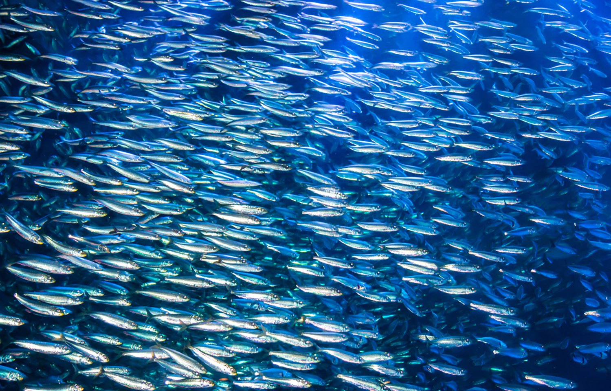
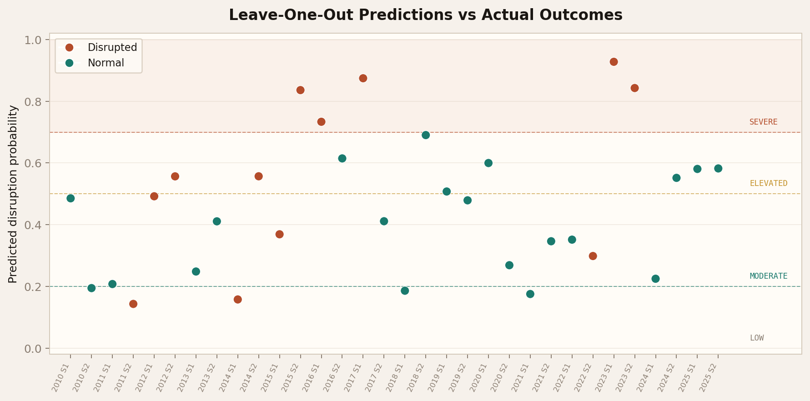
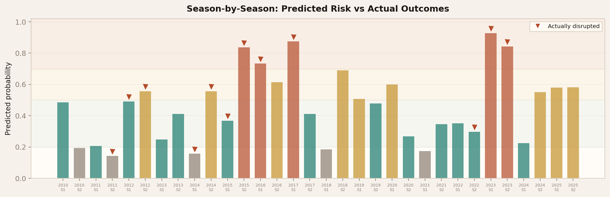
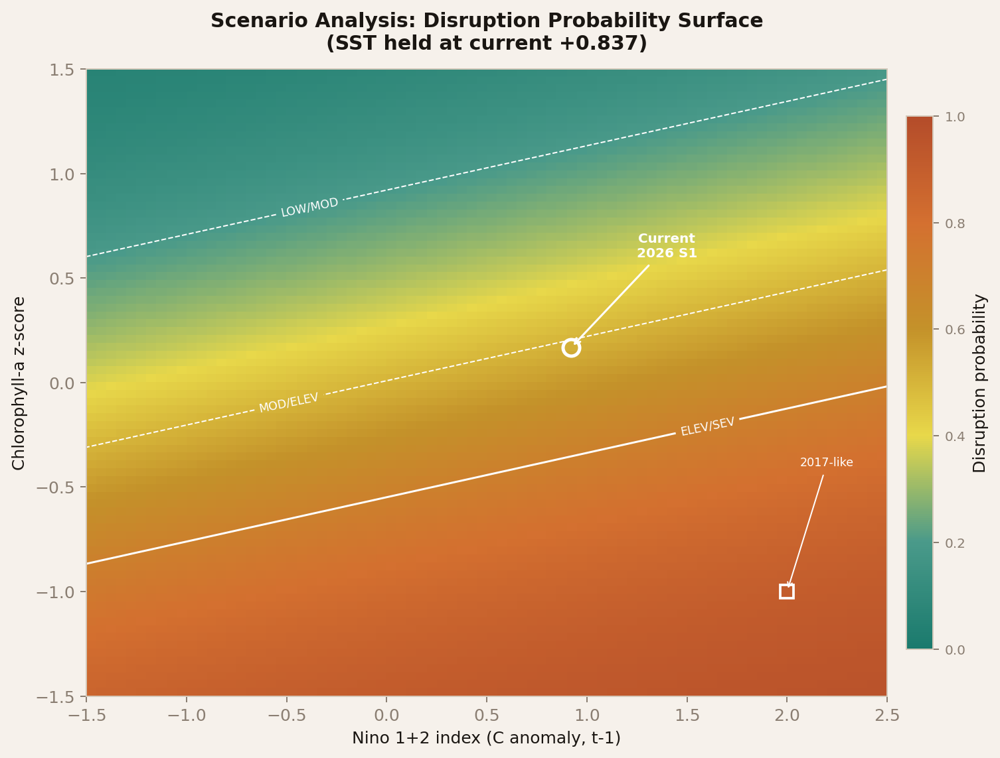

Predicting disruptions to the world's largest single-species fishery using three remotely-sensed oceanographic features. Open source, open data, no proprietary inputs.
What this means: Our model currently estimates a 39.8% chance that Peru's upcoming first anchovy fishing season (April–July 2026) will be disrupted — meaning it could be significantly reduced, cut short, or cancelled. This puts us in the MODERATE risk tier, where historically about 1 in 3 seasons experienced some form of disruption. It's not yet at alarm levels, but conditions are deteriorating and worth watching closely.
Why the risk is elevated and rising: An El Niño Costero event is developing off Peru's coast. Warm water from the equatorial Pacific is pushing southward, suppressing the cold nutrient-rich upwelling that anchovy depend on for food. The Niño 1+2 index — which measures ocean warming in the waters directly off Peru — hit +1.28°C last week, well above normal. A marine heatwave now covers roughly 130,000 km² of Peru's coastal waters, and two subsurface warm waves (Kelvin waves) are forecast to arrive between March and May, which could intensify the warming right as the fishing season is supposed to begin.
What could push this higher: The single biggest factor to watch is chlorophyll — the satellite-measured "greenness" of the ocean that tells us whether phytoplankton (anchovy food) are thriving. If the warm water suppresses upwelling enough to crash chlorophyll levels, our model jumps to ELEVATED (0.60) or even SEVERE (0.72+). In 2017, similar early-year conditions led to a severely disrupted season.
ENFEN Comunicados N°03-2026 (Feb 13) & N°04-2026 (Feb 28). IMARPE cruise 2602-04 underway. Bootstrap 95% CI: [0.136, 0.738].

Photo credit: SeafoodSource
Peru's anchovy (Engraulis ringens) fishery operates in the Humboldt Current upwelling system — one of the most productive marine ecosystems on Earth. Cold, nutrient-rich water rises from the deep ocean along the coast, fueling massive phytoplankton blooms that sustain enormous anchovy populations.
Peru manages its anchovy fishery in two seasons per year: a first season (S1, typically April–July) and a second season (S2, typically November–January), each in two zones — north-center and south. Before each season opens, IMARPE (Instituto del Mar del Perú) conducts a hydroacoustic evaluation cruise to estimate biomass, size structure, and reproductive condition. PRODUCE (Ministerio de la Producción) then sets the total allowable catch.
When ocean conditions shift — El Niño events warm the surface, suppress upwelling, and reduce food supply — the anchovy stock can collapse or become dominated by juveniles too small to harvest. Seasons get reduced, delayed, or cancelled entirely. The 2023 first season was cancelled outright due to 86% juvenile incidence, the first full cancellation in Peru's fishing history.
Norwegian salmon farms, poultry operations, and aquaculture worldwide depend on Peruvian fishmeal. Season disruptions trigger fishmeal price spikes of 30–60%. PAEWS gives supply chain managers early visibility into disruption risk — weeks before official government decisions.
PAEWS uses a logistic regression classifier trained on 32 anchovy seasons from 2010 to 2025. Each season is labeled Normal or Disrupted (combining Reduced, Disrupted, and Cancelled outcomes). Of 32 seasons, 12 were disrupted — a 37.5% base rate reflecting the real volatility of this fishery.
With only 32 samples, standard train/test splits would be unreliable. Instead, the model uses Leave-One-Out Cross-Validation (LOO-CV): for each season, the model is retrained on the other 31 seasons and predicts the held-out one. This provides 32 independent out-of-sample predictions. The ROC-AUC of 0.629 reflects genuine predictive skill, not overfitting. The StandardScaler is applied within each LOO fold to prevent data leakage.

Each dot is one season's out-of-sample prediction. Red dots were actually disrupted; teal dots were normal. The model cleanly separates the worst disruptions (above SEVERE line) from normal seasons.

Bar height shows predicted risk. Triangle markers indicate seasons that were actually disrupted. The 2015–2017 El Niño cluster and 2023 cancellation are clearly visible.
Rather than a binary disrupted/normal call, PAEWS maps the continuous probability to four risk tiers calibrated against historical outcomes:
The SEVERE tier is the most actionable: every season that scored ≥ 0.70 was disrupted, with zero false positives. The middle tiers have overlapping disruption rates — an honest reflection of what three satellite features can resolve with 32 training samples.
Positive coefficients increase disruption probability; negative coefficients decrease it.
| Feature | Coefficient |
|---|---|
| sst_z | +0.390 |
| chl_z | -0.583 |
| nino12_t1 | +0.363 |
| intercept | -0.589 |
Warmer SST and higher Nino 1+2 increase risk (positive). Higher chlorophyll decreases risk (negative) — healthy upwelling means productive ocean and well-fed stock.
Every feature comes from a publicly operated satellite mission or government climate monitoring program. No proprietary data, no paid subscriptions, no manual data entry.
Z-score anomaly for Peru coastal box. Warmer surface = higher risk.
Z-score from Copernicus NRT with coastal mask. Lower Chl = weaker upwelling = higher risk.
Monthly eastern equatorial Pacific anomaly, lagged one month.
The Optimum Interpolation Sea Surface Temperature dataset blends satellite observations (AVHRR sensors on NOAA polar-orbiting satellites), ship reports, and buoy data into a global daily gridded product. PAEWS queries through NOAA's ERDDAP server, extracting monthly mean SST for the Peru coastal box (0-16 S, 85-70 W) and computing z-score anomalies against the seasonal climatology.
Ocean-color satellite chlorophyll-a from the Copernicus Marine Service Near-Real-Time product, derived from the OLCI sensor on Sentinel-3 and merged multi-sensor L4 products. Chlorophyll concentration is a proxy for phytoplankton biomass — the base of the food web that sustains anchovy.
PAEWS applies a coastal productivity mask (top 50% most productive pixels) to avoid dilution by offshore oligotrophic waters. This mask was critical: without it, Copernicus's gap-filling in low-productivity offshore areas destroyed the feature's predictive power.
The Nino 1+2 index is the average SST anomaly in the easternmost ENSO monitoring region (0-10 S, 90-80 W) — directly adjacent to the Peru coast. Unlike the more commonly cited Nino 3.4 (central Pacific), Nino 1+2 captures the eastern Pacific warming that directly impacts Peru's upwelling.
PAEWS uses this value lagged by one month (t-1), meaning the February Nino 1+2 value is used to predict the April-July S1 season. This provides genuine lead time: by prediction time, the value is already published and fixed.
The outcome label for each season (Normal, Reduced, Disrupted, or Cancelled) comes from cross-referencing official sources: PRODUCE Resoluciones Ministeriales published in El Peruano, IMARPE reports, and verified news coverage. All 32 outcome labels were manually verified against primary sources.
No AI-generated or AI-extracted data values are used in the training set. An earlier model version accidentally included LLM-hallucinated biomass values — these were caught and removed during a data integrity audit.
The prediction pipeline downloads data from three public sources, computes z-score anomalies, and passes them through the logistic regression model. The entire flow runs in Python (conda environment: geosentinel) on a local workstation.
SST: data_pipeline.py queries ERDDAP for the Peru coastal box, computes monthly means from daily grids, and calculates z-score anomalies against the full 1981-present climatology.
Chlorophyll: chl_migration.py downloads Copernicus NRT data, applies the coastal productivity mask, and computes z-score anomalies. The mask retains only the top 50% most productive pixels to preserve the upwelling signal.
Nino 1+2: external_data_puller.py downloads the CPC monthly ERSSTv5 ASCII file and extracts the Nino 1+2 ANOM column, lagged by one month.
Prediction: predict_2026_s1.py loads the feature matrix, fits the logistic regression on all 32 seasons with balanced class weights, and outputs the disruption probability with bootstrap confidence intervals (500 resamples).
No proprietary data. No paid APIs. Every input comes from government-operated satellite missions and public climate monitoring programs.
Because the model has only three inputs, scenario analysis is straightforward. We sweep across plausible ranges for Nino 1+2 and chlorophyll to see where the prediction crosses tier boundaries.

The white circle marks the current 2026 S1 position. Moving right (warmer Nino) or down (lower chlorophyll) increases risk. White contour lines show tier boundaries. The 2017-like worst case sits deep in the red zone.
| Scenario | Prob. | Tier |
|---|---|---|
| Current (Feb Nino +0.92, Dec Chl proxy) | 0.398 | MODERATE |
| If coastal chlorophyll drops to -0.40 | 0.596 | ELEVATED |
| If coastal chlorophyll drops to -0.80 | 0.718 | SEVERE |
| Nino +1.50, Chl -0.40 | 0.665 | ELEVATED |
| Nino +1.50, Chl -0.80 | 0.788 | SEVERE |
| Worst case (2017-like) | 0.807 | SEVERE |
ENFEN declared El Nino Costero alert on February 13, 2026 (Comunicado N 03-2026), maintained by Comunicado N 04-2026 (Feb 28). The SIOFEN Weekly Bulletin N 09-2026 reports:
- Nino 1+2 weekly anomaly reached +1.28 C — sharply up from the +0.92 C February monthly value currently used
- Marine heatwave covering ~130,000 km2 within 150 nautical miles of coast
- Tropical Surface Waters pushed south to Punta La Negra; SST anomalies of +5 C near coast
- Two warm Kelvin waves forecast: mode 1 arriving March, mode 2 April/May
- Southern anchovy available only Mollendo-Morro Sama within 10 nm, with predominance of juveniles
- IMARPE pre-season hydroacoustic cruise 2602-04 currently underway
With 32 training samples, the bootstrap 95% confidence interval for the current prediction spans [0.136, 0.738] — a wide range reflecting genuine statistical uncertainty. The model is most reliable at the extremes (SEVERE and LOW tiers) and least discriminating in the middle.
Three historical seasons are consistently misclassified, all for biological rather than oceanographic reasons:
2014 S1 — A subsurface Kelvin wave disrupted the season even though surface SST, chlorophyll, and Nino 1+2 all looked normal. The model cannot see subsurface ocean dynamics.
2022 S2 — 70% juveniles in the catch during a La Nina year with cold surface waters. The disruption was purely biological, invisible to satellite remote sensing.
2011 S2 — Stock depletion after heavy fishing. The ocean looked healthy but the fish weren't there in sufficient numbers.
Satellite-derived features alone likely max out around ROC-AUC 0.65-0.70 for this problem. The path to higher accuracy goes through biological data — particularly the pre-season juvenile percentage from IMARPE hydroacoustic survey cruises.
The Copernicus NRT chlorophyll product has approximately one month of latency for gap-free L4 data. The current prediction uses a December 2025 proxy value, which is three months stale. This is the single most impactful data refresh available.
Five candidate features were rigorously tested and rejected during model development:
- is_summer / bio_thresh_pct — multicollinearity (r = 0.963), dropped during model pruning
- Previous season catch (8 variants) — anchoveta recover too quickly between seasons
- GODAS Z20 thermocline depth — AUC decreased by 0.025; redundant with SST and Nino
- Sea level anomaly (SLA) — promising (+0.051 AUC) but failed bootstrap stability (53%) and permutation test (p = 0.115)